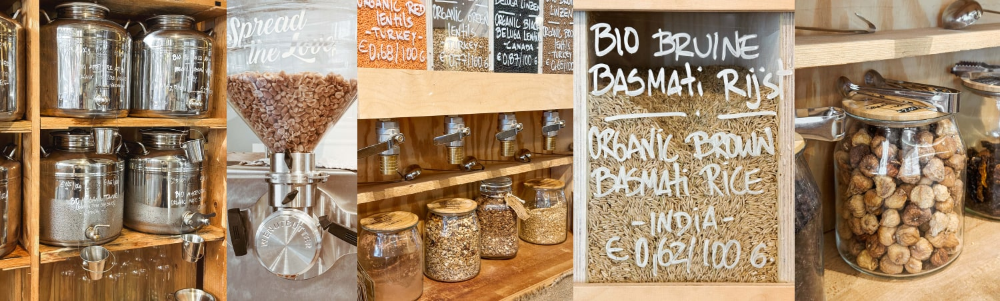
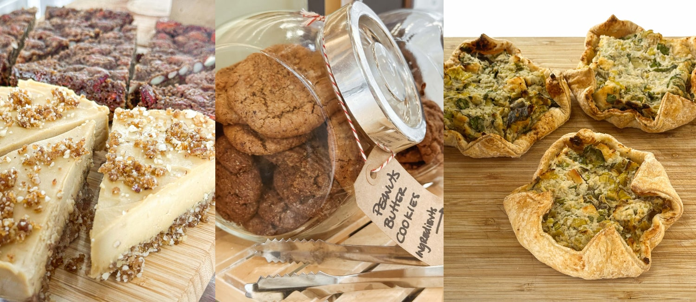
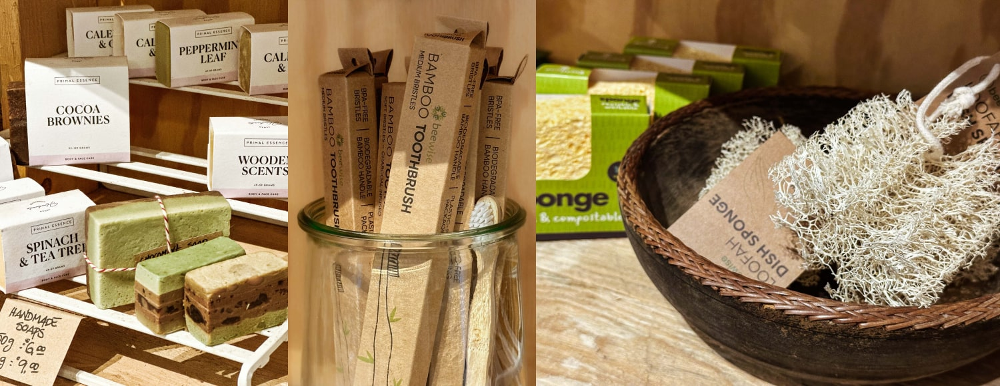

De producten
Bij Little Plant Pantry is er veel keuze uit verschillende voeding en andere producten. Deze samenstelling aan producten is zorgvuldig zelf geproduceerd of uitgezocht en natuurlijk zo duurzaam mogelijk. Daarnaast zijn er veel gezonde en biologische opties. Hieronder is een opsomming van een aantal van de opties om je een beeld te geven van de verschillende producten.
zero-waste zelftap
Dit is waar Little Plant Pantry echt bekend om staat! Neem je potjes en flessen mee om daarin zelf je benodigdheden te tappen. Kies bijvoorbeeld uit rijst, granen, havermout, ahornsiroop, rozijnen of maak zelfs verse pindakaas.
zoetigheden & snacks
Duurzaam, natuurlijk, zelfgemaakt en vooral heel lekker! Kies bijvoorbeeld uit cheesecacke, brownies, koeken en hartige snacks. Eet smakelijk!
zero-waste producten
Deze zero-waste producten zijn goed voor jou en het milieu; tandenborstels, sponsjes en verschillende soorten zeepjes. Welke geur kies jij?
